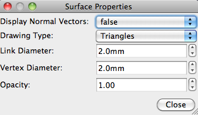

Surface Menu
The Surface Menu allows one to find information
and set parameters for surfaces viewed in Workbench.
- Information... will open a popup
that shows geometric information on the surface being viewed
in the current Active
Tab. If the active tab does not contain a
surface, this option is inactive.
- Surface Properties sets display
options for all surfaces across a Workbench session.
- Display Normal Vectors sets
whether vectors at 90 degrees to the surface will be shown
for each vertex.
- Drawing Type sets how the
surface mesh is drawn in wb_view.
- Hide hides the surface and
all layers drawn on it.
- Links (Edges)
shows the links between surface vertices giving a mesh
appearance.
- Vertices shows only the vertex
points across the surface.
- Triangles shows the
full surface (mesh filled in with interpolated information
between the vertices).
- Link Diameter sets the diameter
of the links when in Links (Edges) drawing mode.
- Vertex diameter sets the
diameter of vertices when in Vertices drawing mode.
- Opacity sets the opacity of the
surface when in Triangles drawing mode. Opacity in the Overlay
Toolbox sets layer opacity.

- Volume interaction sets the
surface used for mapping to volume voxels. This is used in
the Volume/Surface Outline feature and for volume to vertex
identification.